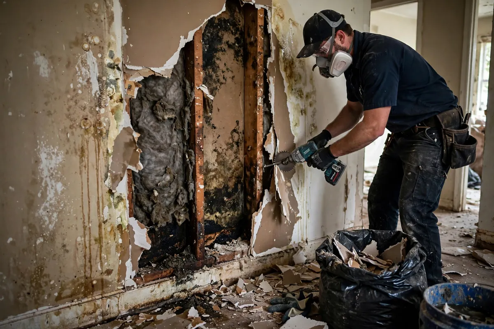

Drywall Water Cleanup in Hollywood, FL
Drywall is everywhere in a home — and it's one of the least water-tolerant materials in it. The gypsum core and paper facing wick moisture upward like a candle wick, and once the paper stays wet it becomes a food source for microbial growth. Drywall water cleanup in Hollywood, FL centers on one decision, made wall by wall: can this section dry in place, or does it need to come out?

Understanding Drywall Water Cleanup in Hollywood
The wicking pattern tells the story. Water at the floor line climbs — often a foot or two or more in standard drywall — leaving a visible tide line. Clean water caught early, with the paper facing intact and no swelling, can sometimes be dried in place with the baseboards removed and airflow directed at the wall base. But drywall that has sagged, crumbled, or stayed wet for days has lost its integrity, and no amount of drying restores it. Insulation behind the drywall is the complicating factor: wet fiberglass must come out regardless, which means opening the wall anyway.
Contamination decides the rest. Drywall touched by gray or black water is removed, not dried — the paper facing can't be disinfected reliably. In Hollywood's humidity, the timeline is unforgiving: drywall that stays wet beyond a couple of days in warm conditions is a microbial risk even if it looks intact. That's why the assessment happens fast, and the cut-or-dry decision is made with moisture readings rather than appearances.
How We Handle the Job
We map moisture up the wall to find the true wicking height — the stain line is the minimum, not the maximum. Baseboards are removed to expose the wall base and allow airflow. Sections that can dry stay; sections that can't are cut out, typically a few inches above the highest moisture reading, in clean straight lines that make reconstruction simpler. Wet insulation behind removed sections comes out with the drywall. What remains gets directed drying until meters confirm it's dry.
Every opened wall is documented — photos of the wicking lines, moisture readings before and after, and what was removed versus dried in place. This record matters at reconstruction time: your drywall contractor needs to know exactly what was cut and why. Clean cuts at consistent heights keep the rebuild straightforward and the texture matching manageable. Related services such as emergency water extraction, structural drying, and flood cleanup often connect to the same loss depending on conditions on site.
Local Response and Insurance Support
Searching for drywall water cleanup near me usually means you need help without delay. We answer emergency calls around the clock. Documentation — photos and moisture readings — supports conversations with your insurance carrier when the loss is sudden and accidental. We do not decide coverage; we provide clear technical information about the work performed.
When to Call
Call if you have active water, wet materials that are not drying, odors after a leak, or a backup that may involve contaminated water. Early action in Hollywood’s climate is almost always less disruptive than waiting. For neighborhood-specific service, see our service areas. For the full list of capabilities, visit all services.
Frequently Asked Questions
How do you decide whether drywall stays or goes?
Three factors: water category, saturation level, and time wet. Clean water, caught early, with intact drywall can often dry in place. Contaminated water, crumbling or sagging drywall, or drywall wet for an extended period means removal. Moisture meter readings make the call — not how the wall looks from the outside.
Why do you cut the drywall instead of just drying it?
Two reasons: wet insulation behind the drywall can't dry in place and must come out, and drywall that wicked water high up the wall won't release it fast enough to beat microbial growth in Florida humidity. A clean cut above the moisture line removes the problem completely and gives reconstruction a straight edge to work with.
Will the new drywall match the old?
A good drywall contractor can match texture and paint so the repair disappears — that's standard reconstruction work, separate from the water damage cleanup. Keep a paint can or the paint code if you have it; it makes matching much easier. The cleanup documentation showing exactly what was removed helps the contractor scope the rebuild.
Can I just paint over water-stained drywall?
Only after it's verified dry and the source is fixed — and even then, staining usually needs a stain-blocking primer before topcoat, or it bleeds through. Painting over damp drywall seals moisture in and virtually guarantees problems later. If the drywall is still wet, paint is the last thing it needs.